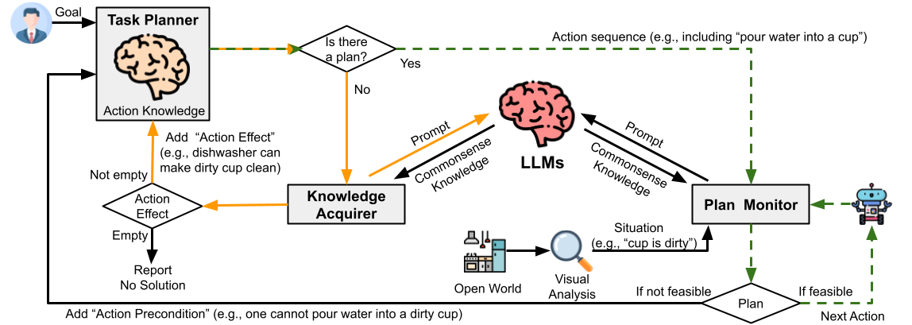
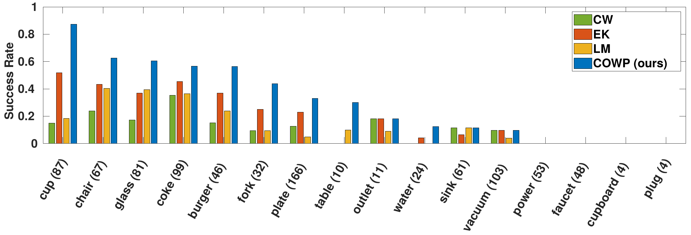
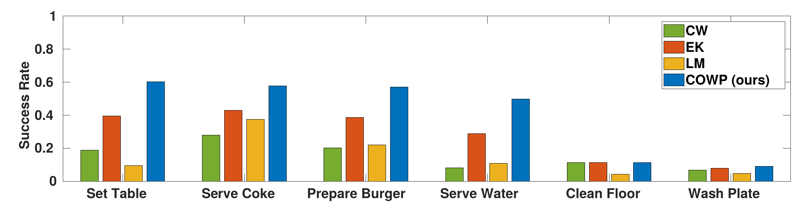

Yan Ding1, Xiaohan Zhang1, Saeid Amiri1, Nieqing Cao1, Hao Yang2,
Chad Esselink2, Shiqi Zhang1
1SUNY Binghamton 2Ford Motor Company
[Paper] [Supplementary] [Code] [Dataset] [Demo]
Abstract
Automated task planning algorithms have been developed to help robots complete complex tasks that require multiple actions. Most of those algorithms have been developed for “closed worlds” assuming complete world knowledge is provided. However, the real world is generally open, and the robots frequently encounter unforeseen situations that can potentially break the planner’s completeness. This paper introduces a novel algorithm (COWP) and system for open-world task planning and situation handling that dynamically augments the robot’s action knowledge with task-oriented common sense. In particular, common sense is extracted from Large Language Models based on the current task at hand and robot skills.
Contributions
The main contribution of this work is a novel integration of a pre-trained LLM with a knowledge-based task planner. Inheriting the desirable features from both sides, COWP is well grounded in specific domains while embracing commonsense solutions at large.
For systematic evaluations, we have created a dataset with 561 execution-time situations collected from a dining domain using a crowd-sourcing platform, where each situation corresponds to an instance of a robot not being able to perform a plan (that normally works). According to experimental results, we see COWP performed significantly better than three literature-selected baselines in success rate. We implemented and demonstrated COWP using a mobile manipulator.
Framework
|  |
An overview of COWP that includes the three key components of Task Planner (provided as prior knowledge under closed-world assumption), Knowledge Acquirer, and Plan Monitor. The green (dashed) loop represents a plan execution process where the robot does encounter no situation, or these situations have no impact on the robot's plan execution. The orange loop is activated when the robot's current (closed-world) task planner is unable to develop a plan, which activates Knowledge Acquirer to augment the task planner with additional action effects utilizing common sense
Experiment Results
|  |
|  |
Top: Overall performances of COWP (ours) and three baseline methods under six different tasks, where the x-axis represents the task. Each success rate value is an average of 150 trials. The tasks are ranked based on the performance of COWP, where the very left corresponds to its best performance.
Bottom: Overall performances of COWP (ours) and three baseline methods under different objects, where the x-axis represents the object involved in the situation, the number beside each object is the occurrence of the object in our situation dataset, and the y-axis represents the success rate. The objects are ranked based on the performance of COWP, where the very left corresponds to its best performance.